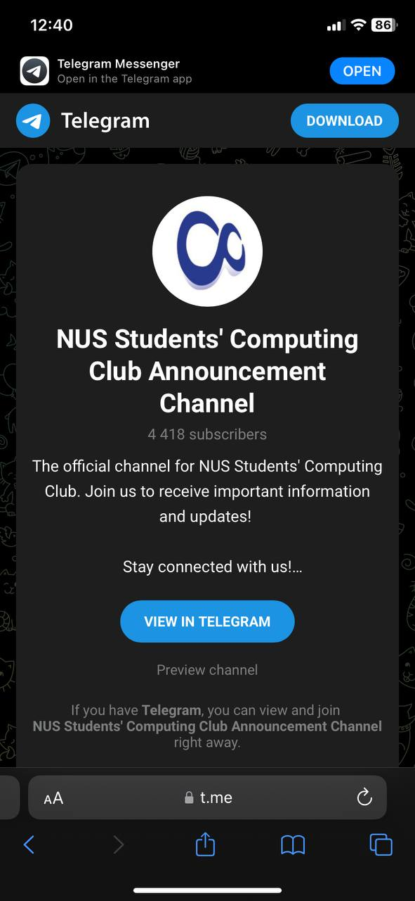
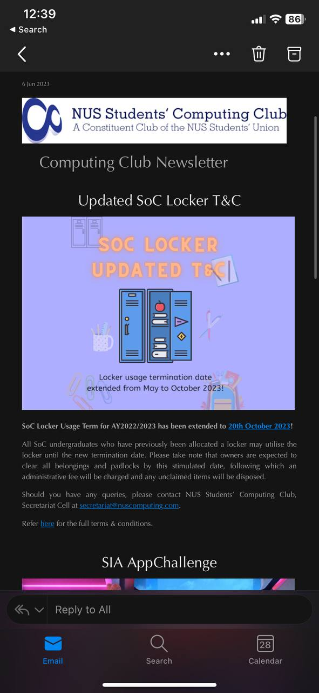
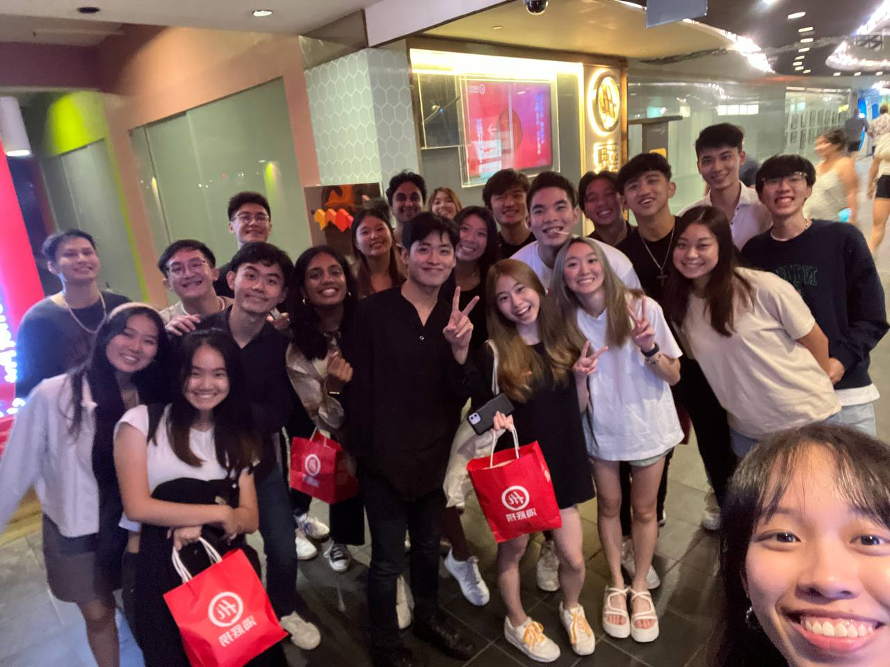
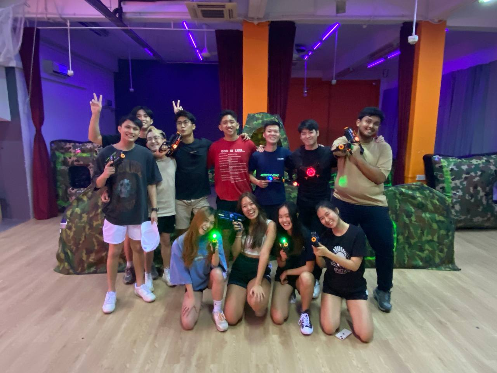
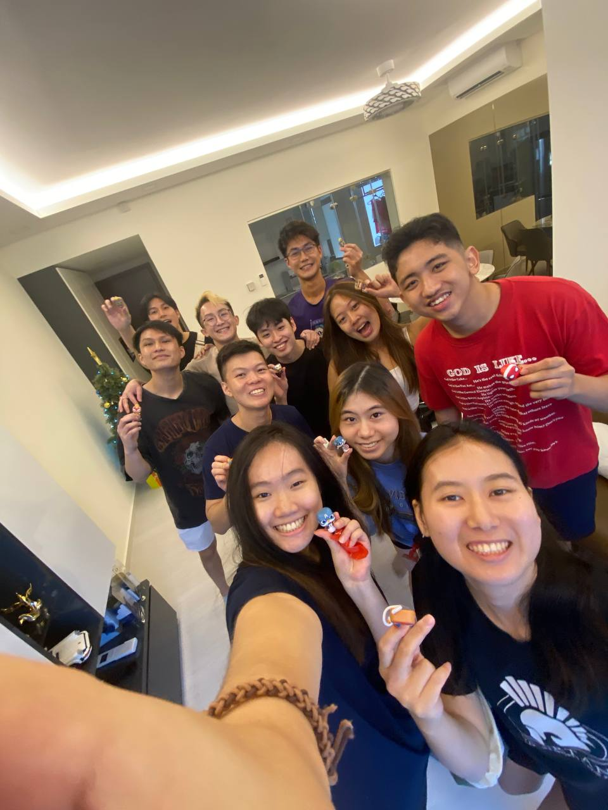
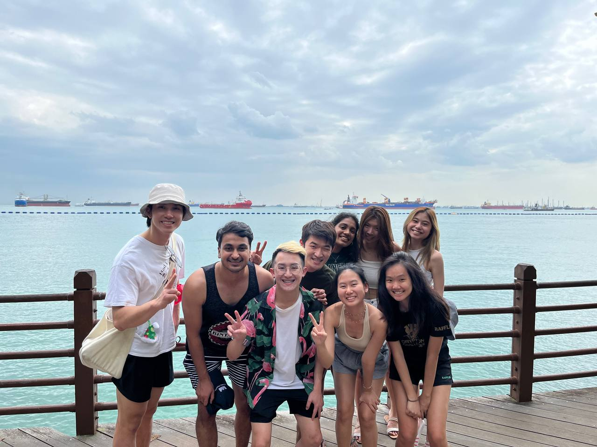
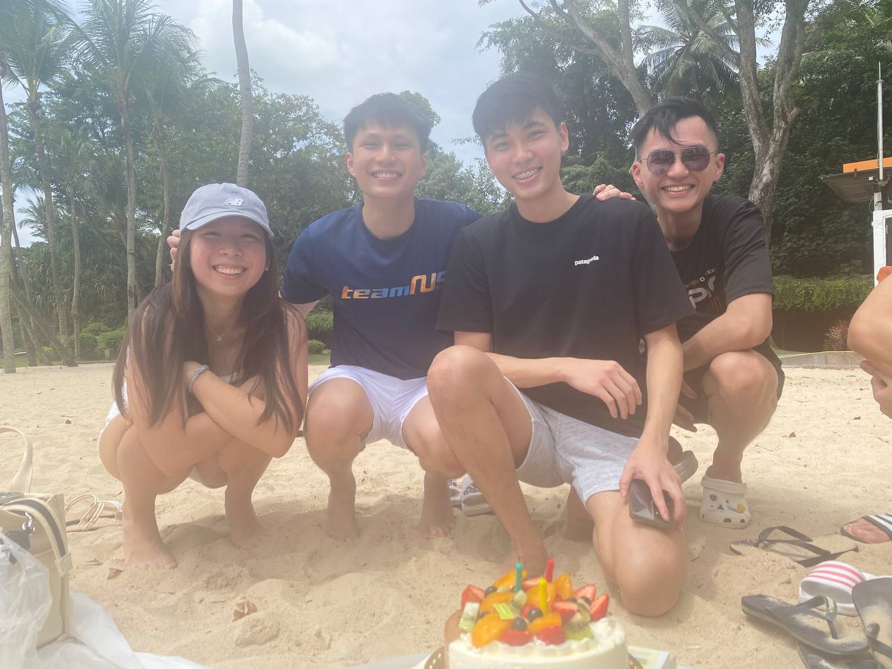

Presidential Wing
The Presidential Wing (P Wing) consists of the President, the General Secretaries, Finance Secretary,
Operations Secretary, Tech Leads & the 4 Vice Presidents. In contrast to its grandiose title,
the Presidential Wing seeks to handle all internal club affairs to ensure its other wings are able to run
smoothly. Beyond that, the Presidential Wing seeks to be a force multiplier, bolstering the capabilities
of the other wings, ensuring that these 4 Wings are all working together and are all on track.
"The mitochondria is the powerhouse of the cell", similar to the mitochondria, we seek to power all
Computing Club events by providing the necessary support.
We have weekly meetings to get updates on all the cells, and identify areas for collaboration between the
different cells. The Vice Presidents also get feedback from the rest of the P Wing to improve upon their
events.
Introduction
The President of Computing Club, together with the Vice Presidents, leads the club and
makes crucial decisions for the club and the faculty.
The role of the president falls under 2 main areas: Club Matters & Faculty Matters.
Roles
Club Matters
The President works with various members of the Presidential Wing (P Wing) to oversee club matters. This includes:
- Working with the General Secretaries to hold MC Meetings and P Wing Meetings.
- Working with the Finance Secretaries to oversee Club Finances and ensure that the Club spendings are all appropriate.
- Working with the Tech Leads to have the Computing Club Website and have it updated for the various occasions (Introduction of the MC, FOP period, Elections).
- Interacting with the VPs of the different wings to understand all club happenings and render support wherever necessary. During P Wing meetings, the President ensures that the entire Club is in sync and the various Wings are all complementing and helping one another.
- Being on the ground for the events and interacting with the subcommittee members to encourage and support them.
Faculty Matters
Computing Club represents all the Computing Undergraduates and is their voice. The President is not only in charge of club happenings, but also various things in the faculty. This includes:
- Constant interaction with the student body (speeches, email blasts, etc.) to understand any concerns or issues they may be facing and bringing these up to the relevant offices in the school.
- Working with the School Leaders (Dean & Vice Deans) to address these issues and consider ways to make the life of every student better.
- Working with various offices in the University (OSA, OFN, OCA, etc.) to address any university level issues. For example, I had to speak with the Office of Campus Amenities (OCA) to think of ways to retain Cool Spot in COM2 when their initial plan was to have it removed upon the opening of COM3.
- Participating in NUSSU meetings and discussions and representing the faculty and club in these decision making processes.
Experience
It was a very new and enriching experience. As the president, you have the birds eye view of the entire
club. You get to see exactly how every member in the club is working and how the various cells are
working together to support the club and faculty.
I went in thinking I'm the President of the Club and my job is to oversee the Club happenings. But very
soon after taking over, I realised that the job is more than that. I also need to oversee all faculty
happenings as well.
When being in charge of such a large institution, a lot of things get directed at you and lots of
unexpected things will pop up. As a President, you need to stay strong and handle all of these issues
calmly and efficiently. From my personal experience, this is only possible if you are confident about
your team. So one learning point is that keeping the entire team strong and united is extremely
crucial.
One of my favourite memories is at the very start of our term. When everyone was fresh and super
motivated to embark on this journey. Seeing everyones energy and the big plans they had for SoC made me
really excited as well. So glad the team was able to maintain the energy all the way and deliver
everything they promised!
Introduction
Welcome to the Computing Club Management Committee! Our vision is to create a
well-organised and tightly-knit committee, where club records are managed responsibly and all members
of the Management Committee are united as one big family. We believe in fostering a strong sense of
camaraderie and mutual support among our members.
As the General Secretaries of the club, we work hand in hand with the Presidential Wing to
ensure the smooth functioning of the Computing Club Management Committee. Our primary responsibility
is to take charge of all club records and administrative tasks, but we go beyond that to look
after the wellbeing of our members and promote bonding among everyone involved.
Roles
Our roles as General Secretaries are diverse and multifaceted. We are entrusted with the
vital task of maintaining various administrative aspects of the Computing Club. This includes managing
the club's Telegram Channel, disseminating important information through the weekly faculty newsletter,
handling locker applications, and organizing club meetings. In addition to these administrative
responsibilities, we also take on the crucial role of caring for the welfare of our club members.
We understand that a united and harmonious committee is the key to success, so we frequently organize
bonding activities such as club-wide cohesions, birthday celebrations, and distribute welfare packs.
We believe in acknowledging and appreciating the efforts put in by our members, and thus we also
prepare customized gifts as tokens of appreciation.
Experience
Serving as General Secretaries of the Computing Club has been an incredibly rewarding experience. Through our roles, we have learned the importance of effective communication, teamwork, and responsibility. Managing administrative tasks and club records has taught us to be organized and detail-oriented, ensuring that everything runs smoothly. But beyond the administrative aspects, the true joy comes from witnessing the growth of our club members and the bonds that form among them.
Events
Club Outreach:Telegram, Newsletter, MC Organization Chart, Lockers, Noticeboards
 Club Well Being: Birthdays, Cohesions, Welfare
    Introduction
The Finance Cell's responsibility is to supervise all financial aspects of the Computing Club. This encompasses managing the club's budget allocation, granting approval for all purchases and sponsorships, as well as handling reimbursement processes within the club.
Roles
The primary objective of the Finance Cell is to ensure the seamless processing of all transactions
while adhering to the established financial guidelines and procedures. Additionally, the cell aims to
promote transparency and provide a clear overview of the club's financial processes, which in turn
supports the smooth functioning of the other cells.
As the Finance Secretary, you will collaborate closely with the President to ensure that all planned
initiatives can be executed within the club's financial capabilities. Moreover, you will have the
opportunity to engage with different university offices and external entities to facilitate the
efficient management of the club's finances.
Experience
The role of the Finance Secretary may initially appear uneventful, but it encompasses much more than
meets the eye. As the Finance Secretary, you have the opportunity to think creatively and find
innovative ways to present complex financial procedures and intricate numerical breakdowns in a clear
and easily understandable manner.
While being adept with numbers is beneficial, it is not the most crucial aspect of this role.
What truly matters is your dedication and commitment to the club. Having a genuine passion for the
club's mission and a strong desire to support and facilitate the success of every wing and cell within
the organization will make the role immensely enjoyable and fulfilling.
Introduction
The Tech Leads build apps and manage the tech infrastructure Computing Club runs on.
- At the lowest level, the Tech Leads cell manages the online profiles of every existing member in and affiliated to the Computing Club Management Committee. This means creating custom @nuscomputing emails and custom GDrives.
- Aside from that, Tech Leads builds, deploys, and maintains the websites on the xyz.nuscomputing.com domain. This means manning the Computing Club GitHub account.
- Working with the Tech Leads to have the Computing Club Website and have it updated for the various occasions (Introduction of the MC, FOP period, Elections).
- Tech Lead also work with the Finance Secretary on streamlining the process of RFP submission.
- TL can also suggest existing platforms and apps the CC members can use to maximise productivity (eg: Notion, Trello, etc.)
Roles
Depending on how involved you wish to be, you can mostly stick to the safe stuff like
managing user profiles and just the main website. You can take it to the next level by building apps and
custom platforms depending on the needs and wants of the MC.
You can learn web development, UI/UX, and can get better at finding quick tech solutions to existing
problems that hinder productivity. You even learn to present these solutions in a digestible manner to
the rest of the MC and professors during meetings. You get to decide the toolkit for the MC!